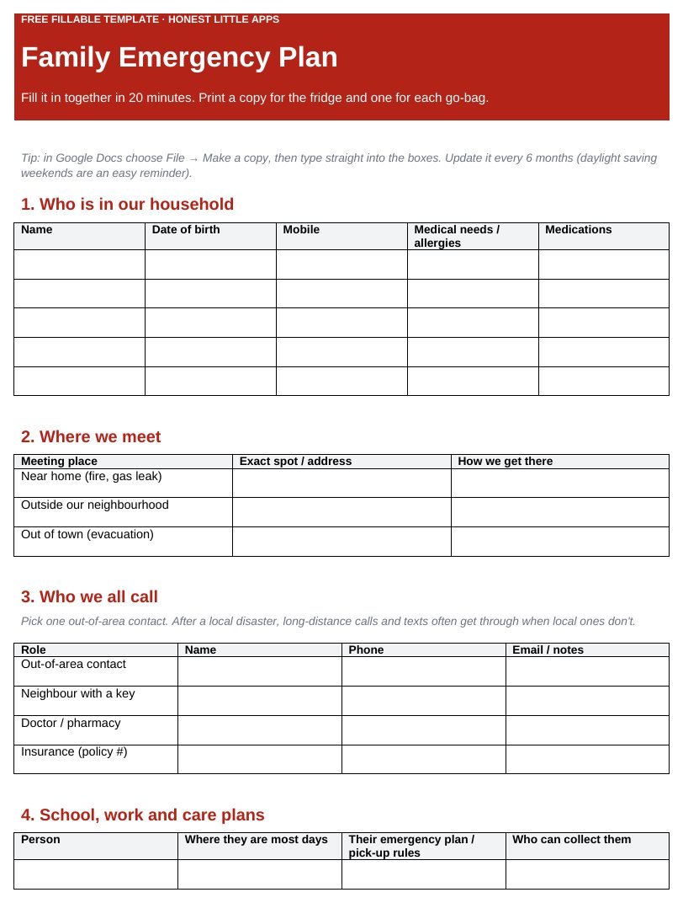

Home › Free Downloads › Word
Free Word downloadFamily Emergency Plan Template
A fill-in Word template for your household: meeting places, who to call, shut-offs, pets, go-bags and where your documents are.
⬇ Download the Word file .docx · free · no sign-upWorks in Microsoft Word, Google Docs (File → Open → Upload) and Apple Pages. Prints on US Letter and A4.

What’s inside
- Household members, medical needs and medications
- Three meeting places and an out-of-area contact
- Utility shut-offs, extinguisher and first-aid locations
- Go-bag checklist and document locations
How to use it
- Fill it in together; it takes about 20 minutes.
- Print one copy for the fridge and one for each go-bag.
- Review it every 6 months.

Family Ready: Emergency Plan
Family Ready gives you a free offline Emergency Card and a step-by-step family emergency plan on iPhone.
Get it free on the App StoreQuestions
What should a family emergency plan include?
Who is in the household, where you meet, one out-of-area contact, how to shut off utilities, plans for school, work and pets, a go-bag and where your documents are.
Why an out-of-area contact?
After a local disaster, long-distance calls and texts often get through when local ones don’t.
Is this official guidance?
No. It is a planning aid. Always follow local emergency services during an emergency.
More free downloads
Daily Water Intake Tracker 2027Shift & Pay Tracker with OvertimeJob Estimate & Invoice TemplateClient Appointment Booking LogSleep Log & Bedtime Routine TrackerScreen Time Tracker: What Your Phone Really CostsBible Reading Tracker: All 66 BooksAfter-the-Argument Repair WorksheetThe 11 Human Body Systems: Free SlidesBooks of the Bible by Section: Free SlidesWhy Is the Sky Blue and Sunsets Red? Free Slides